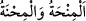

Çünkü Âlemlerin Rabbinden bunları gördüm
“Şükreden ancak kendisi için şükretmiş olur,” Çünkü şükür elde olan nimeti tutup
bağlama, elde olmayanı elde edip avlama sebebidir. “nankörlük edene” yâni nimetin
kadrini bilmemek ve hakkını yerine getirmemek sûretiyle şükretmeyene “gelince,”
nankörlüğünün zararı kendisinin aleyhinedir. “o bilsin ki, Rabbimin hiçbir şeye
ihtiyacı yoktur,” onun şükründen de müstağnîdir. Şükretmese bile o kimseye keremini
ızhâr etmek ve onu cezâlandırmakta acele etmemek sûretiyle “çok kerem sâhibidir.”
dedi.”
el-Müfredât’ta der ki: “Lütuf ve musîbetin (__WORD__) her ikisi de imtihandır.
Musîbet sabrı, lütuf şükrü gerektirir. Sabrın hukukunu yerine getirmek, şükrün hukukunu
yerine getirmekten daha kolaydır. Bundan dolayı lütuf, bu iki imtihandan daha büyük
olanı oldu.”
Hz. Ömer (r.a.) dedi ki: “Sıkıntı/darlık ile imtihan edildik, sabrettik. Bollukla
imtihan edildik, sabredemedik.” Yine Emîru’l-mü’mînin (r.a.): “Kime dünyası
genişletilir de o, kendisinin onunla aldatıldığını bilmezse, o kimse aklının oyununa
gelmiştir.”
Vâsıtî (r.h.) der ki: “Şükürde iyiliği görmeyi iptal vardır. O’nun fazlı kadîm ve
şükredenlerin şükrü muhdes/sonradan olma olduğu halde, onların şükrü nasıl O’nun
fazlına denk olur?! Kim şükrederse, kendisi için şükretmiş olur. Çünkü Allah ondan da,
onun şükründen de müstağnîdir.”
Şiblî (r.h.) da şöyle demiştir: “Şükür, minneti/cömertliği görüp hareketsiz ve sessiz
kalmaktır.”
el-Es’iletü’l--müfhıme’de der ki: “Âyette iki yönden kerâmetleri isbâta delil vardır:
1- Cinlerden olan ifrît, Süleyman (a.s.) yerinden kalkmadan önce tahtı getirme
iddiâsında bulununca Süleyman (a.s.) bunu inkâr etmedi ve: “Bundan daha çabuğunu
istiyorum.” dedi. İşte cinlerden bir ifrit için bu mümkün olunca, Allah Teâlâ’ın bazı velî
kulları için nasıl mümkün olmasın?!
2- Kitab’dan bir ilme sâhip olan Süleyman (a.s.)’ın vezîri Âsaf, peygamber değildi.
Kur’an’ın beyan buyurduğu gibi, göz açıp kapamadan onu Süleyman (a.s.)’ın yanına
getirdi. Bu, evliyâ için harikulâde kerâmetlerin câiz olduğuna delâlet eder. Bu hususu
inkâr eden Kaderiyye’nin görüşünün aksine bu böyledir.”
Kerâmet, peygamberlik iddiâsında bulunmayan mü’min bir şahıstan harikulâde/olağan
üstü bir işin zuhûr etmesidir. Bu, îman ve amel-i sâlih sâhibi olmayan bir kimseden
zuhûr ederse istidrâc olur. Peygamberlik dâvâsında bulunan birinden zuhûr ederse
mûcize olur.
Bazıları der ki: Şüphe yok ki tahkîk ehline göre her kerâmet mutlaka ilim, amel ve
güzel ahlâk gibi bir fazîletin sonucudur. Dolayısıyla sâhih bir ilim veya sâlih bir amel
olmadan görülen harikulâde hallere îtibar edilmez.
Tayy-i mekan (yerin dürülmesi), kulun cismini mücâhedelerle ve çeşitli ibâdetlerle,